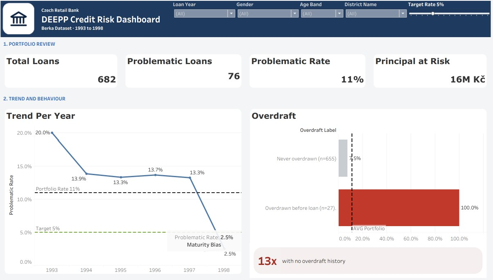

What predicts a bad loan at a retail bank
All 27 accounts that went below zero before the loan went bad. Two pre-loan reviews, using data the bank already holds, bring the problematic loan rate from 11.1% to 5.0%.
The question
How can the credit team bring the problematic loan rate from 11% to below 5% within 12 months, using signals the bank already has before a loan is paid out?
Context
The Berka dataset is a public Czech retail banking dataset covering 1993 to 1998: 5,369 clients, 4,500 accounts, about 1.05 million transactions and 682 loans. 76 of those loans ended in default or arrears, which puts the problematic loan rate at 11.1%.
What I did
- Framed the problem with DARCI, a SMART problem statement and an issue tree with four root causes: weak account liquidity, cash flow strain, loan burden and thin banking history.
- Joined eight tables in DuckDB into one row per loan, using only transactions dated before the loan was granted, so every signal is available at approval time.
- Kept outliers instead of deleting them. The 2,999 negative-balance transactions became the strongest risk signal in the project.
- Ranked the drivers by risk lift, built a risk score with logistic regression (8 features, 5-fold cross validation) and simulated the effect of each review on the portfolio.
- Published an interactive Tableau dashboard for the Head of Credit Risk and loan officers.
What I found
- Overdraft before the loan is the strongest signal. All 27 accounts that went below zero before the loan went bad, 13.3 times riskier than the safest group.
- Heavy instalments drive bad loans, not big loans. The heaviest instalment quartile fails at 19.3%, the lightest at 5.8%. Loan amount stays flat until the largest group.
- A simple score finds most of the risk. The riskiest 20% of scores hold 48 of the 76 problematic loans, and the Very high band fails at 35.0%.
- Demographics barely matter. Gender shows almost no difference in risk (1.1x).
- The 1998 drop is not real progress. Its 2.5% rate is maturity bias. Mature years sit at 13 to 14%.
The dashboard
One Tableau dashboard shows where risk sits and what fixes it. It is organised as four sections: portfolio review, trend and behaviour, who is at risk, and model score and recommendation. Users can filter by loan year, gender, age band and district, and a Target Rate slider moves the target line and the safe zone on every chart.

What I recommended
- Send every pre-loan overdraft to manual review. Alone this takes the rate from 11.1% to 7.5% without losing a good loan.
- Review the top 20% of risk scores. Combined with the first action, the rate lands at 5.0%, on target.
- Cap the instalment at 17% of monthly income as a buffer below 5%.
- Compare loans of the same age in reports, so new loans do not look falsely safe.
From the deck
Select a slide to enlarge it. The full deck is in the links.